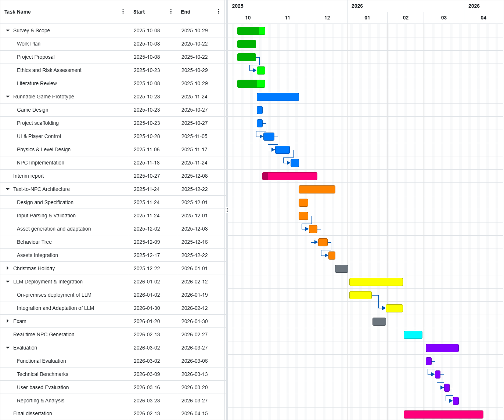

Project Management
Managed the dissertation with a Gantt-planned schedule and weekly self-reviews. I deliberately prioritised
a robust, testable attribute-tuning pipeline before expanding to full text-to-NPC generation,
keeping progress predictable under uncertainty and limited compute.

Gantt Chart: Work Plan.
Planned work + deviations: Started with a staged plan (setup → pipeline → evaluation), then refined scope
to attribute-level generation first . Full spritesheet and behaviour synthesis were postponed due to uncertainty
around determinism, Unity asset stability, and controllability.
Time & resource strategy: Deployed the local LLM earlier than planned (lower integration cost than expected),
and reused an MIT-licensed Vampire Survivors–style prototype to avoid building a full game from scratch—freeing time for
schema design, prompt stability, and validation.
Risk control + monitoring: Built validation and schema constraints before trusting any generative output,
isolated LLM integration as a separate module to reduce refactor risk, and tracked slippage via weekly check-ins—breaking
unstable tasks (prompt tuning / schema refinement) into smaller milestones to maintain momentum.
Next: extend from attribute-only to full generation with spritesheet tooling, behaviour tags + validation,
and a more systematic evaluation of latency, correctness, and usability.